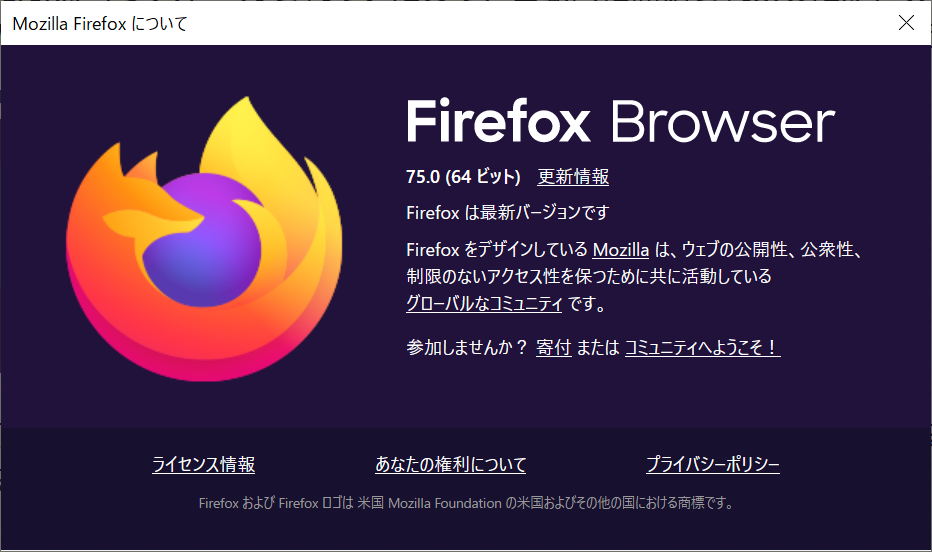

Lunatic電通生もっちゃんの部屋
STEP 1 Web ブラウザ Firefox をインストールする
まず、https://www.mozilla.org/ja/（firefox）にアクセスします。
次に、「Firefoxをダウンロード」（青いボタンでも、右上のボタンでもどちらでもOK）をクリックします。
自動的にダウンロードが開始されます。「保存」してから「実行」をしてください。（この「保存」は任意です） この後、ユーザーアカウント画面（警告画面？）がでてきます。「はい」を押しましょう。
自分の環境では、Firefoxがインストールされていたので、自動的に開始されましたが、実際は、保存場所などが聞かれます。特にこだわりがない場合は、そのまま「次へ」を押していき、インストールしましょう。
この画面がでたら完了です。会員登録は任意です。下の方にある「ブラウジングを開始する」を押して開始しましょう。 （常用ブラウザに設定する必要はありません）
ちなみに、Firefoxブラウザの「右上の三⇒ ヘルプ ⇒ Firefoxについて」で今のブラウザのバージョンが確認できます。
